Overview
As a former team captain, mechanical lead, and robot operator in FRC, I designed and iterated advanced competitive robots under tight timelines. Highlights include a turret-based dodgeball shooter with a rotating magazine and a full robot redesign completed in under a week. Today, I continue mentoring FRC students, helping them explore and grow in STEM fields.
Throughout my four years in FRC, I progressed from team member to mechanical lead and ultimately team captain. As mechanical lead, I was responsible for the design, prototyping, and manufacturing of competition robots, managing a team of students under tight 6-week build seasons.
Key contributions include designing competition-winning mechanisms, implementing rapid redesigns during competitions, and mentoring younger team members. My technical skills grew from basic fabrication to advanced CAD design, CNC machining, and systems integration.
Beyond competition, I developed leadership skills by coordinating team efforts, managing resources, and presenting our designs to judges. These experiences formed the foundation of my engineering career and passion for robotics.
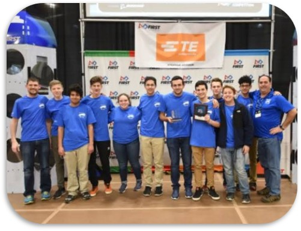
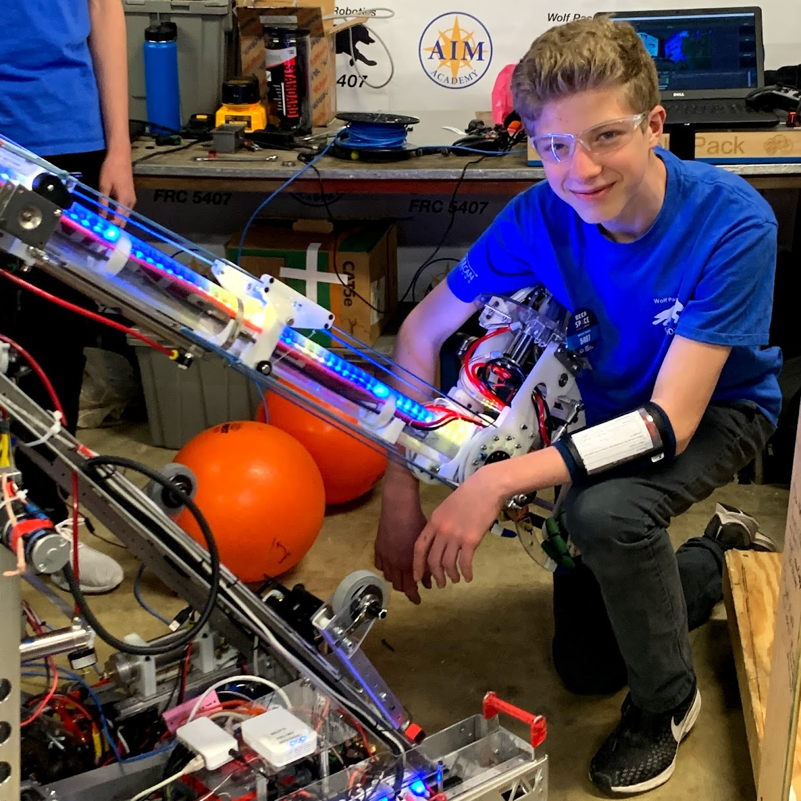
2020 Season
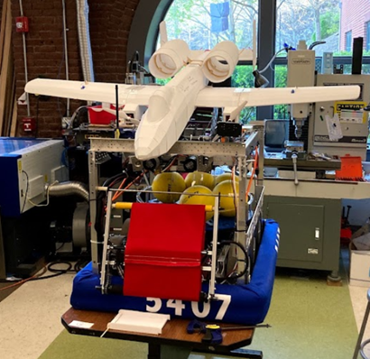
As team captain and mechanical lead in 2020, I designed a turret-based dodgeball shooter. After watching the first competition, I led a complete robot redesign in one week. Unfortunately, competitions were canceled due to COVID, but the experience taught valuable lessons in adaptability and leadership.
Our initial design featured a 360° turret mounted on a tank drive chassis, allowing independent aiming while maintaining mobility. The system included a custom flywheel shooter with vertical adjustment hood and a unique feeding mechanism.
Key innovations included a piston-driven feeder that achieved 6 inches of throw from a 2-inch piston, enabling consistent feeding regardless of turret orientation. We implemented careful wire management to prevent entanglement in the rotating turret.
We prioritized a low profile to navigate under field obstacles, but this created challenges with ball feeding height. The solution was a custom piston extender that doubled the throw distance without increasing the mechanism height.
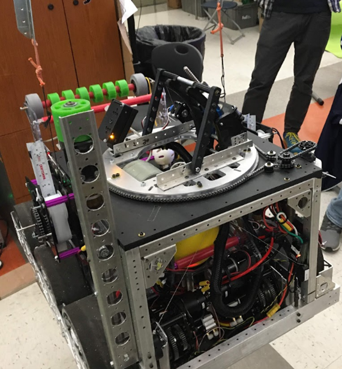
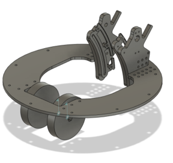
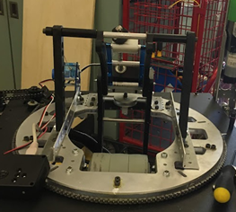
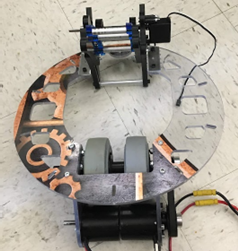
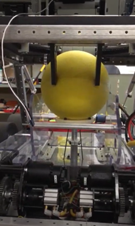
After observing the first competition, I realized our robot wouldn't be competitive. With seniors away on trips, I proposed and led a complete redesign in just one week. We stripped the robot to its base and rebuilt with a revolutionary ball handling system.
The new "washing machine" design featured a rotating storage carousel with a central tube. An omni wheel positioned above a cutout would engage balls when spinning, propelling them up the tube and into the flywheel. This increased our firing rate from 1 ball every 3-4 seconds to 5 balls in the same timeframe.
This redesign demonstrated our team's resilience and my ability to lead under pressure. Though COVID prevented competition, the experience proved our capacity for rapid innovation and adaptation.
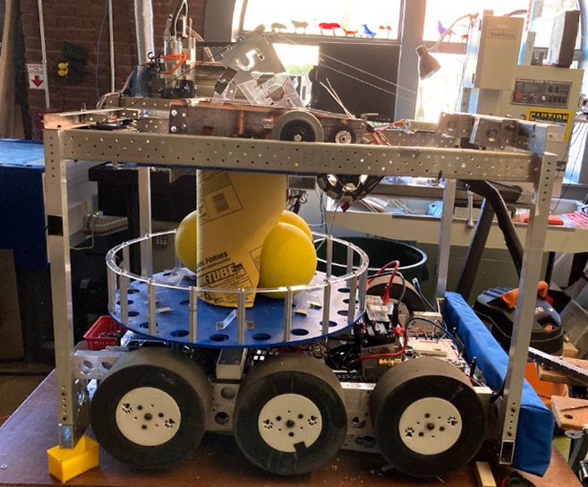
In Memory of Sam Ozer
Sam Ozer was a brilliant and beloved member of our team who tragically passed away in a biking accident during the season. His creativity and passion for robotics inspired everyone who worked with him.
Sam had begun developing an innovative climbing mechanism that I completed in his memory. His ingenious concept used two opposed tape measures to deploy a hook connected by Kevlar rope. The opposing orientation prevented buckling that would occur with a single tape measure.
I took Sam's prototype and engineered a robust metal version capable of handling competition forces. After winching the hook to the climb bar, the robot would reel itself up. Integrating this mechanism onto our robot was a tribute to his creativity and a way to honor his contribution to our team.
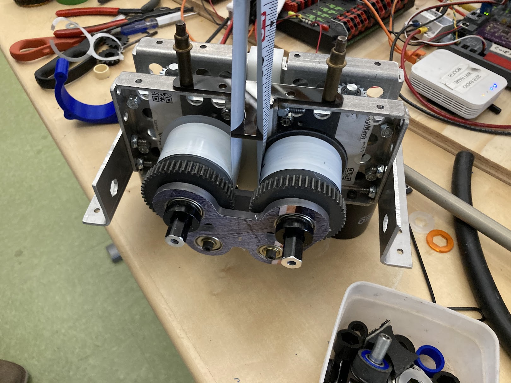
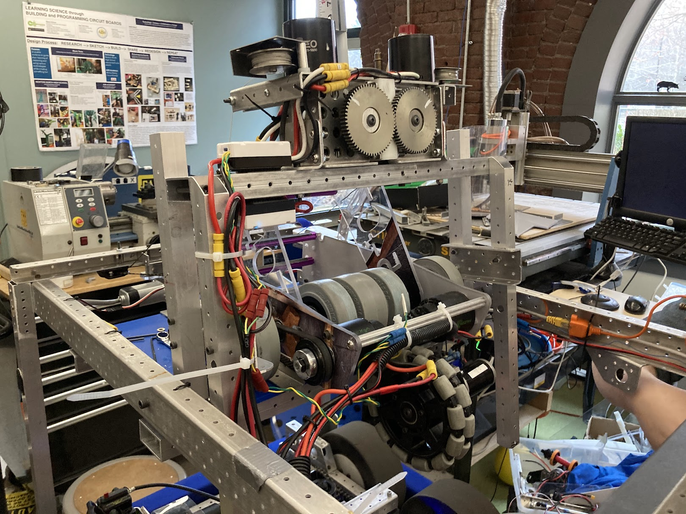
2019 Season
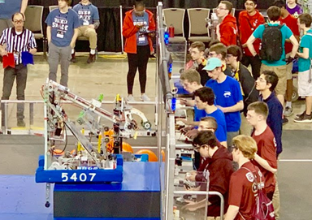
As mechanical lead and robot operator in 2019, I designed a robot for Deep Space that could manipulate game pieces and climb a 2-foot platform in 7 seconds. We won the off-season Ramp Riot competition, showcasing our robot's capabilities.
The Deep Space game required handling polycarbonate disks and large yoga balls. Our solution featured multiple intake systems: low-profile intakes for ground collection and an arm-mounted intake for higher scoring positions.
During the district competition, I redesigned a key game piece handler based solely on a side photo of our robot. This modification significantly improved functionality despite FRC's strict rules against modifying bagged robots between events.
Our climbing mechanism could scale the endgame platform in just 7 seconds. This speed, combined with our versatile intakes, made us a formidable alliance partner. We demonstrated our robot's capabilities by winning the off-season Ramp Riot competition.
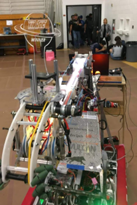
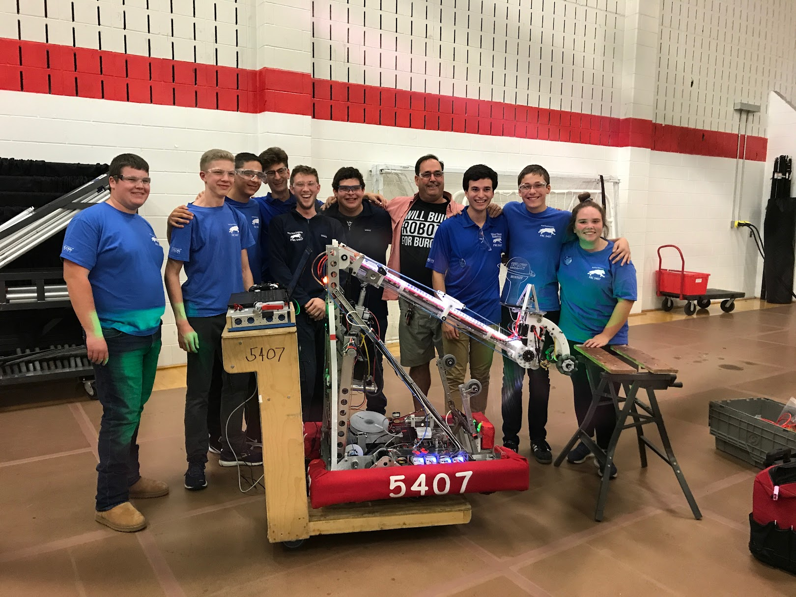
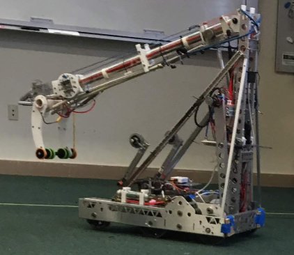
2018 Season
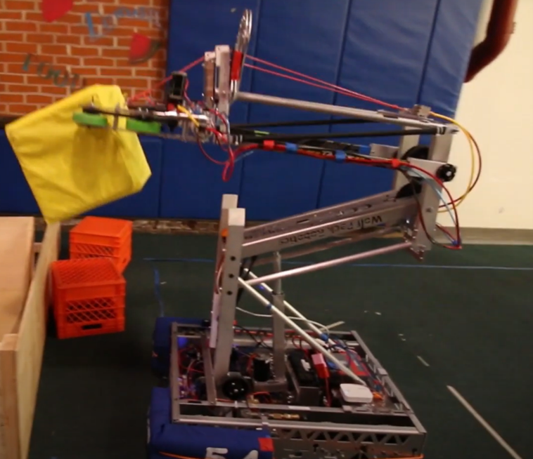
My rookie year in FRC introduced me to competitive robotics. Our reverse four-bar parallel lift robot earned us a spot at the World Championship in Detroit and won the Excellence in Engineering Award.
As a newcomer, I focused on learning the engineering design process, fabrication techniques, and team dynamics. Our robot's lift mechanism could place game pieces over 9 feet high, a key capability in that year's game.
Competing at the World Championship in Detroit was a transformative experience that solidified my passion for robotics and engineering. The collaborative environment and exposure to advanced designs inspired me to pursue mechanical engineering.
Off-Season Project: Elevator Mechanism
I developed a top-braceless elevator system that could support a pivoting arm for game piece transfer. This project advanced my CNC machining skills and taught me valuable lessons in precision manufacturing.
Traditional elevator designs require top bracing, which interferes with pivoting arms. My solution fully constrained the uprights so they became their own support structure as the elevator extended.
I designed a universal mounting bracket that could be used throughout the mechanism. After teaching myself Fusion 360 CAM, I generated precision G-code to manufacture parts with exact tolerances for bearing alignment around aluminum extrusions.
The development process included prototyping in foam before machining HDPE components. Though never implemented in competition, this project significantly advanced my CAD/CAM skills and understanding of precision manufacturing.
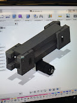
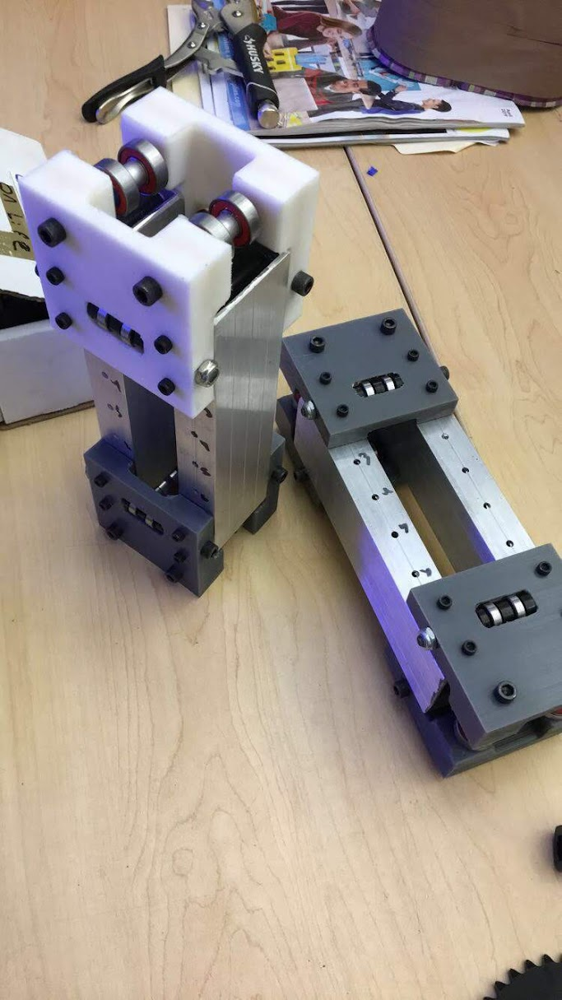
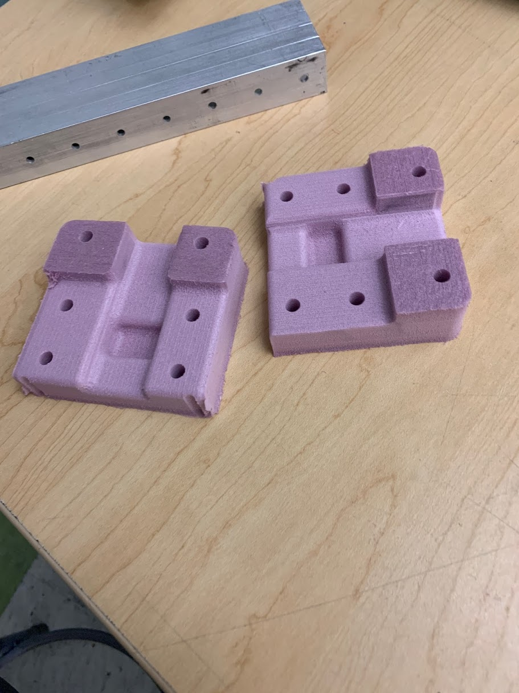